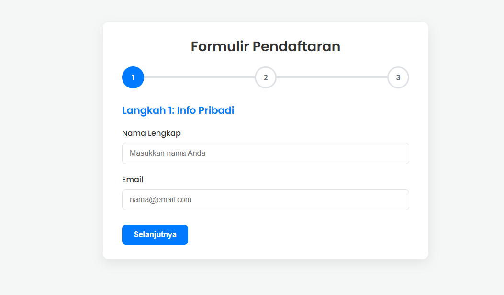

Formulir Multi-Langkah (Wizard)
Tentang Template Ini
Ini adalah template komponen "inovatif" yang menunjukkan cara menangani formulir kompleks dengan membaginya menjadi beberapa langkah yang mudah dikelola. Ini sering disebut sebagai "Form Wizard".
Template ini sangat penting untuk meningkatkan pengalaman pengguna (UX) saat meminta banyak data, seperti pada halaman registrasi panjang, proses checkout, atau survei. Fungsionalitasnya dikendalikan murni oleh Vanilla JavaScript untuk mengelola status langkah saat ini.
Fitur Utama:
- Progress Bar (Bilah Kemajuan): Memberi tahu pengguna di mana mereka berada.
- Navigasi Langkah: Tombol "Selanjutnya" dan "Sebelumnya" yang dinamis.
- Manajemen Status: JavaScript mengontrol langkah mana yang aktif.
- Tombol Final: Tombol "Kirim" hanya muncul di langkah terakhir.
- Transisi Halus: Efek "fade in" antar langkah.
- Desain formulir yang bersih dan modern.
Teknologi yang Digunakan:
- HTML5
- CSS3 (Termasuk Animasi CSS)
- Vanilla JavaScript (DOM Manipulation & Event Listeners)